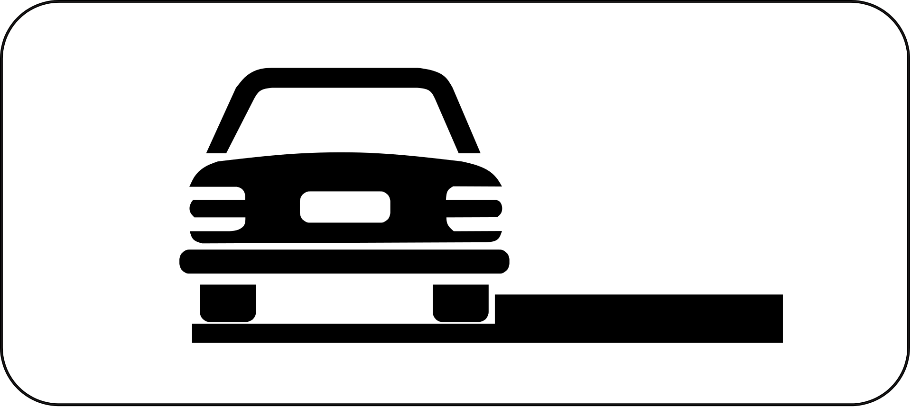

Mediu de învățare
Indicatoarele instalate pe drumurile publice sunt:
- de Avertizare;
- de Reglementare, care pot fi: de Prioritate, de Interzicere sau Restricție, de Obligare;
- de Orientare și Informare, care pot fi: de Orientare, de Informare, de Informare Turistică, Panouri Adiționale, Indicatoare kilometrice și hectometrice;
- Mijloace de semnalizare a lucrărilor, care cuprind: Indicatoare rutiere temporare, mijloace auxiliare de semnalizare a lucrărilor.
( Art. 64 din R )
Indicatoarele se instalează, de regulă, pe partea dreaptă a sensului de mers. în cazul în care condițiile locale împiedică
observarea din timp a indicatoarelor de către conducătorii cărora li se adresează, ele se pot instala ori repeta pe partea
stângă, în zona mediană a drumului, pe un refugiu ori spațiu interzis circulației vehiculelor, deasupra părții
carosabile sau de cealaltă parte a intersecției, în loc vizibil pentru toți participanții la trafic.
( Art. 65 din R )
Indicatoare de Avertizare

Semnele adiționale se pot aplica pe panouri ce includ indicatoare ori chiar pe indicatoare, dacă înțelegerea semnificației acestora nu este afectată.
Indicatoare de Informare

Semnele adiționale se pot aplica pe panouri ce includ indicatoare ori chiar pe indicatoare, dacă înțelegerea semnificației acestora nu este afectată.
Indicatoare de Obligare
Semnele adiționale se pot aplica pe panouri ce includ indicatoare ori chiar pe indicatoare, dacă înțelegerea semnificației acestora nu este afectată.
Indicatoare de Prioritate
Semnele adiționale se pot aplica pe panouri ce includ indicatoare ori chiar pe indicatoare, dacă înțelegerea semnificației acestora nu este afectată.
Indicatoare de Restrictie
Semnele adiționale se pot aplica pe panouri ce includ indicatoare ori chiar pe indicatoare, dacă înțelegerea semnificației acestora nu este afectată.
Indicatoare Orientative

Indicatoarele de orientare oferã informații referitoare la direcția ce trebuie urmatã pentru a se ajunge la destinația dorită ori la diferitele utilități publice de care pot beneficia participanții la trafic pe traseul pe care urmează să-l parcurgă.
Panouri Aditionale
Panourile aditionale sunt montate pentru a semnala diatanta de la sau pana la care indicatorul rutier are actiune, intervalele orare in care trebuie respectata semnificatia indicatorului, inceputul sau sfarsitul zonei de actiune a indicatorului, etc.